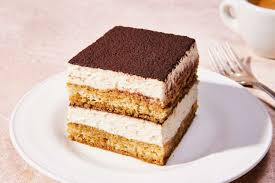

How to make Tiramisu
Tiramisu is an Italian dessert consisting of layers of sponge cake soaked in coffee and brandy or liqueur with powdered chocolate and mascarpone cheese.
The required ingredients are:
- Mascarpone
- cream
- egg
- coffee
- ladyfinger
- sugar
- cocoa powder
- yolk
- Mascarpone cheese
- Whipping cream
Ready to make the best tiramisu of your life? You'll find the full recipe below, but here's what you can expect when you make this classic tiramisu recipe:
- Make the Filling Cook the egg yolks, sugar, and milk until slightly thickened. Let cool slightly, then chill in the fridge for about an hour. When the filling has fully chilled, mix in mascarpone cheese.
- Make the Whipped Cream Beat heavy cream with vanilla extract until stiff peaks form.
- Soak the Ladyfingers: Combine coffee and rum in a small bowl. Pour mixture over ladyfingers that have been split in half lengthwise.
- Assemble the Tiramisu: Line the bottom of a baking dish with soaked ladyfingers. Spread half of the mascarpone mixture over the ladyfingers, then half of the whipped cream over that. Repeat in the same order. Dust with cocoa powder.